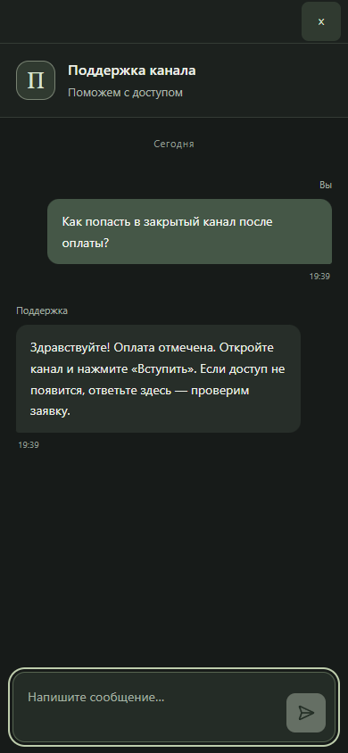
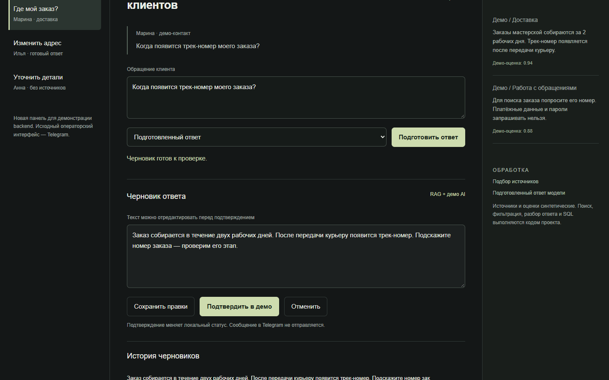
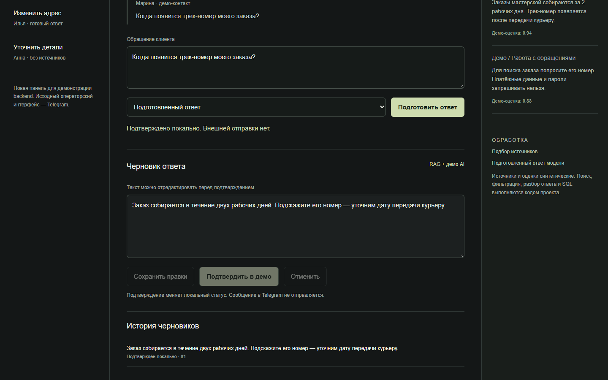
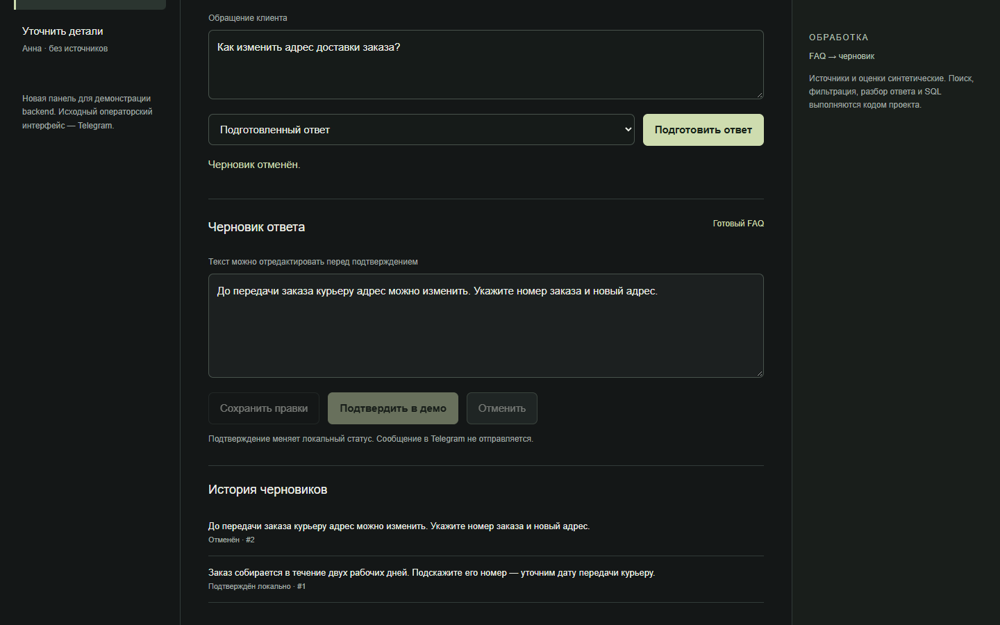

Original
Cloudflare Worker, D1, R2, Telegram topics, operator drafts, React webchat и widget.
Посетитель пишет на сайте. Обращение появляется в Telegram-топике, AI собирает черновик по базе знаний, оператор редактирует и решает, что отправить.

AI готовит основание и текст. Последнее действие остаётся за человеком.
Монтаж трёх проверенных частей: webchat replay, реальный обезличенный Telegram и локальный RAG/AI replay. Это не инсценировка единой production-сессии.
Виджет встроен в страницу продукта, сохраняет историю и возвращает пользователя в тот же разговор. В demo используется вымышленный сценарий доступа к закрытому каналу.


Очередь обращений, отдельный топик, подготовленный ответ и четыре понятных действия: Edit, Send, Regen, Close. Сам Telegram не перерисован.
Отдельная техническая demo-панель показывает фактически проверенные backend-ветки: подбор источников, черновик, правку, локальное подтверждение и историю. Она не выдаётся за исходный интерфейс продукта.



Cloudflare Worker, D1, R2, Telegram topics, operator drafts, React webchat и widget.
12 API-сценариев, исходный StorageClient через SQLite/D1 adapter и UI на 390 / 768 / 1440.
Пользователи, канал, тексты и retrieval/model responses вымышлены. Внешняя отправка отключена.